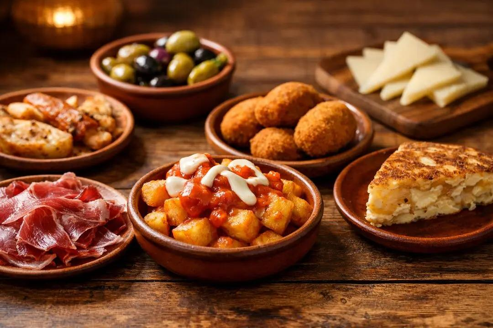

Tapas, raciones y tostadas para compartir, disfrutar y repetir.

Patatas con salsa brava.
Croquetas tradicionales.
Aceitunas con hierbas mediterráneas.
Calamares rebozados y crujientes.
Gambas con ajo y aceite de oliva.
Selección de quesos para compartir.
Pan tostado con tomate y jamón.
Tomate, aceite de oliva y hierbas.
Tostada con queso de cabra y miel.
Descubre nuestro concepto mediterráneo.